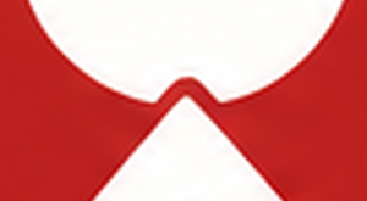
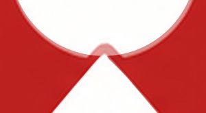
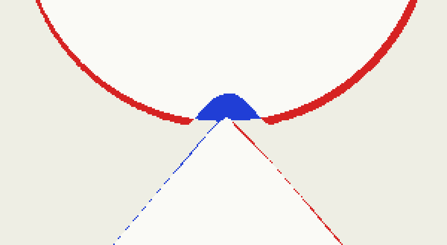
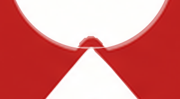
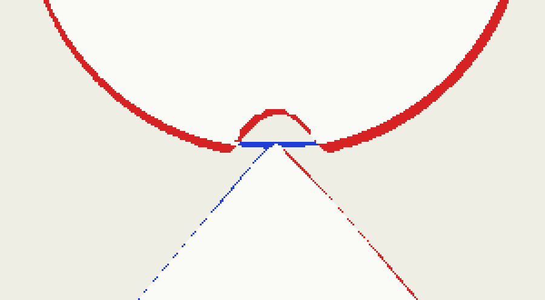
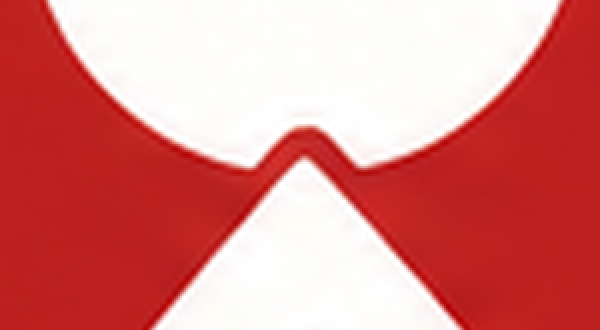
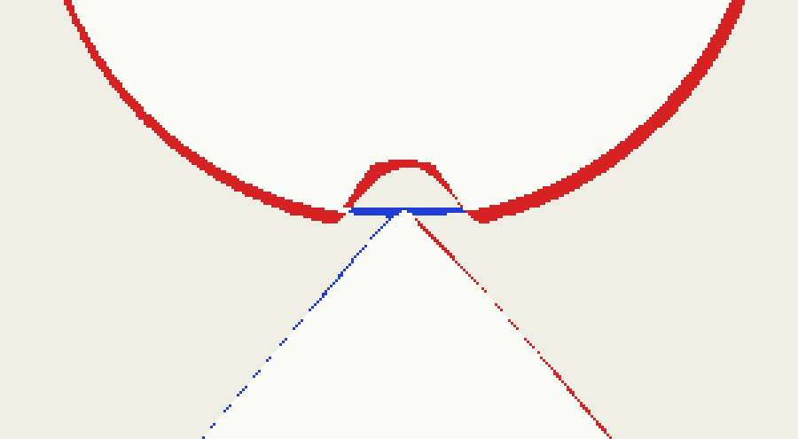
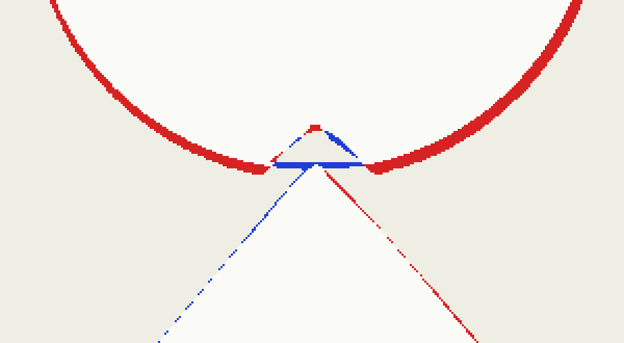
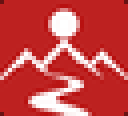

Güneş–Sırt Girintisi · Yerel Düzeltme
V-01 sembolünün kaynak rasterında, beyaz sırtın güneşe doğru yaklaşırken oluşan konkav girinti. A / B / C adaylarının üçünde de eksikti. Burada yalnızca bu yerel düzeltme yapıldı.
Neden kaçmıştı
Aday A güneşi <circle cx="200.21" cy="77.12" r="45.10"> olarak çiziyordu. Kusursuz bir daire, kendi içine doğru konkav bir oyuk barındıramaz — girinti matematiksel olarak imkânsızdı. Ölçüm: güneş konturunda yarıçaptan sapma yalnızca 61.9°–141.4° aralığında 1.2px üzerine çıkıyor; yani düzeltme bölgesi kesin ve yereldir. Derinlik 7.2px, genişlik 15px, tepe noktası (199.5, 115).
Raster kenar boyunca ±1px gürültü taşıdığı için, girintiyi yalnızca sapma eşiğiyle bulmak güvenilmez. Güvenilir ölçüt işaret değişimi: dairenin belirgin biçimde içeride kaldığı tek sürekli aralık. Uçlar tam olarak (193,121) ve (208,121).
Yerel hata metriği
| Aday | Bölge IoU | Girinti geri çağırma | Yalnız girinti IoU | Yerel MAE | Bütün-logo IoU | Dosya |
|---|---|---|---|---|---|---|
| A | 0.9146 | 34.4% | 0.7008 | 8.96 | 0.9346 | — |
| A1 | 0.9240 | 84.8% | 0.7767 | 8.19 | 0.9355 | 5041 B |
| A2 | 0.9232 | 84.8% | 0.7637 | 8.29 | 0.9354 | 4482 B |
| A3 | 0.9278 | 79.0% | 0.8282 | 7.92 | 0.9358 | 4525 B |
Bölge IoU: güne/sırt kırpımı (150,95)–(250,150) mühür pikseli. Girinti geri çağırma: kaynaktaki kırmızı girinti piksellerinin ne kadarının adayda kırmızı olarak kaldığı — tanımlayıcı özelliğin doğrudan ölçümü. A bu değerde %34 ile girintiyi büyük ölçüde kaybediyor.
Adaylar
A Mevcut aday — düzeltme yok
Güneş kusursuz bir



A1 En sadık izleme
Kaynak konturunun 18 noktası doğrudan kullanıldı. Derinlik 7.2px, genişlik 15px, kaynak kenarı birebir.



A2 Asgari temizlik
Aynı derinlik ve ritim, 5 düğüm. Kaynaktaki merdiven basamakları yok edilmiş, giriş çıkış daire ile hizalı.



A3 Alternatif fit Bézier
Düz kollar ve dar köşe yarıçapı, 6 düğüm. En yüksek yerel IoU; raster kenarı belirsiz olduğu için ayrı bir okuma sunar.




Yöntem
Aday A dosyasında yalnızca bir eleman değişti: <circle> etiketi. Kırmızı alan, sırt yolu ve taban geometrisi A ile bayt bayt aynıdır. Düzeltme, güneşi iki alt-yol olarak kurar: değişmeyen fit edilmiş daire + fill-rule="evenodd" ile oyulan girinti. Böylece güneşin silüeti A ile aynı kalır, yalnızca girinti eklenir.
Konturun doğrudan kırpılması denendi ve reddedildi: 340°'lik tek kübik Bézier 4/3·tan(d/4) katsayısı 15.5'e çıkıp kontrol noktasını x=−499'a gönderiyor ve yol kendi kendini kesiştirip girintiyi dolduruyordu. Delik yaklaşımı hem kesin hem sağlam.
Görüntü üretimi çağrısı: 0.